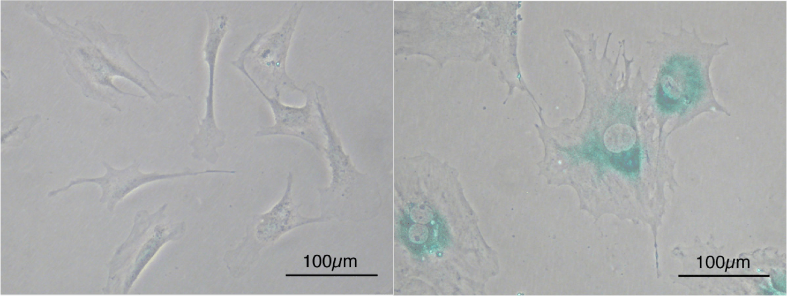

What is Bronchopulmonary Displasia (BPD) and why should we study it?
I know what BPD is, take me to Research

a radiograph of BPD (source: wikipedia)
Bronchopulmonary Displasia is a lung disease developed often by underweight premature babies. These babies often go through stress from prematurity and birth often causing Respiratory Distress Syndrome, a disease that usually precedes BPD. A factor that further places a child at risk for BPD is mechanical oxygen ventilation, which although life saving it does not come without its setbacks. Mild BPD can cause some dependancy on ventilation and low blood oxygen levels. Yet, when severe, this leads to problems in lung development and even neurological complications that can even cause visual, auditory, and learning disabilities.
It's important to note that BPD is also called Chronic Lung Disease (CLD) of Prematurity.
How does Senescence relate to BPD?

Stains for SA-B-Gal a marker of senescence, senescent cells on right (source: wikipedia)
Senescence is a natural biological function that switches the cell from its regular proliferative state to non-proliferative, meaning that the cell ceases to divide. Senescence can be caused by a multitude of reasons such as age of the cell, telomere shortening, DNA damage, and/or stress. Becaus the cells cannot proliferate after senescence, it is a powerful tool against cancer, as it will prevent the unlimited proliferation seen in cancer. Yet, agressive cancers usually find ways around senescence.
Senescence relates to BPD because hyperoxia induces senescence. Interestingly, cells under senescence will still be highly metabolically active, which begs the question as to whether they are protective or harmful in the pathology of BPD. Understanding BPD and the effects of senescence on it is high importance to the field because we could help neonatal babies going through this detrimental disease. This is why we are interested in studying the effects of hyperoxia induced senescence in BPD.
Finding the role of hyperoxia induced senescence in the metabolism of lung cells

Perturbation of Mitochondrial Homeostasis leading to Senescence (source: Ziegler et al., 2014)
BPD is a chronic lung disorder often seen in low weight premature babies that were born with Respiratory Distress Syndrome. This disorder is treated in part by mechanical ventilation which exposes the baby to hyperoxia. Hyperoxia can be a stressor, for example leading to oxidative damage, which may lead to hyperoxia induced senescence. Senescence in turn can play a detrimental role in disease (although senescence does have some benefits also).
As you can see on the figure above, many pathways lead to senescence, including those connected by the p16, pRB, p21, and p53 tumor supressor oncogenes. I have described that in MLE-12 cells, alveolar epithelial type II cells, senescence is p53 dependent. The image above also shows metabolic pathway connections to p53 and senescence. This is of importance because hyperoxia is also known to modulate metabolism. My goal is to understand the effect of hyperoxia on alveolar lung cells, specifically surrounding p53, glycolysis, and senescence - and whether glycolysis and senescence are intertwined.
If you are interested in my research and want to learn more please contact me here.